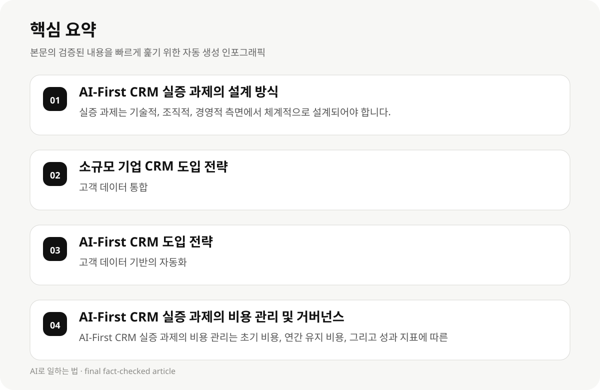

AI-First CRM 실증 과제의 설계 방식 #
소규모 기업이 AI-First CRM를 도입할 때, 먼저 실증 과제를 설계해야 합니다. 실증 과제는 기술적, 조직적, 경영적 측면에서 체계적으로 설계되어야 하며, 비용 관리와 거버넌스 설계가 필수적입니다. 실증 과제는 14일 단위로 단계별로 진행되어야 하며, 비용 관리와 거버넌스 설계는 초기 단계에서 반드시 포함되어야 합니다.
실증 과제는 기술적 측면에서는 AI 도입의 기술적 가능성, 조직적 측면에서는 기존 시스템의 적합성, 경영적 측면에서는 기대 효과를 평가해야 합니다. 예를 들어, 기술적 측면에서는 AI 도입의 기술적 복잡도를 평가하고, 조직적 측면에서는 기존 시스템의 연동 가능성, 경영적 측면에서는 기대 효과를 평가해야 합니다.
AI-First CRM 실증 과제의 설계 방식은 기술적, 조직적, 경영적 측면에서 체계적으로 설계되어야 하며, 비용 관리와 거버넌스 설계는 실증 과제의 성과지표와 밀접하게 연결되어야 합니다. 실증 과제는 14일 단위로 단계별로 진행되어야 하며, 비용 관리와 거버넌스 설계는 초기 단계에서 반드시 포함되어야 합니다.
- 실증 과제는 기술적, 조직적, 경영적 측면에서 체계적으로 설계되어야 합니다.
- 실증 과제는 14일 단위로 단계별로 진행되어야 하며, 비용 관리와 거버넌스 설계가 필수적입니다.
- 실증 과제는 기술적 측면에서는 AI 도입의 기술적 가능성, 조직적 측면에서는 기존 시스템의 적합성, 경영적 측면에서는 기대 효과를 평가해야 합니다.
소규모 기업 CRM 도입 전략 #
소규모 기업의 CRM 도입 전략은 고객 데이터 통합, 비용 효율성, 기능적 맞춤화를 중심으로 설계되어야 합니다.
CRM 도입 시 고객 데이터 통합은 영업 및 마케팅의 효율성을 높이고, 비용 효율성은 중소기업의 경영 부담을 줄이는 데 도움이 됩니다.
기능적 맞춤화는 기업의 특성에 맞는 CRM을 선택하여 운영 효율성을 높입니다.
실증 과제는 기술적 측면에서는 AI 도입의 기술적 가능성, 조직적 측면에서는 기존 시스템의 연동 가능성, 경영적 측면에서는 기대 효과를 평가해야 합니다. 예를 들어, 기술적 측면에서는 AI 도입의 기술적 복잡도를 평가하고, 조직적 측면에서는 기존 시스템의 연동 가능성, 경영적 측면에서는 기대 효과를 평가해야 합니다.
- 고객 데이터 통합
- 비용 효율성
- 기능적 맞춤화
AI-First CRM 도입 전략 #
AI-First CRM 도입 전략은 고객 데이터 기반의 자동화, 실시간 분석, 고객 경험 향상을 중심으로 설계되어야 합니다.
AI는 반복 업무를 자동화하여 시간과 인력 부담을 줄이고, 고객 데이터를 분석하여 맞춤형 마케팅 및 영업 전략을 수립할 수 있습니다.
실시간 분석은 CRM의 효과적인 운영 및 확장에 필수적입니다.
AI-First CRM 실증 과제의 비용 관리와 거버넌스 설계는 실증 과제의 성과지표와 밀접하게 연결되어야 합니다. 비용 관리는 초기 비용, 연간 유지 비용, 그리고 성과 지표에 따른 재정 조정을 포함해야 합니다. 예를 들어, 초기 비용은 100만 원, 연간 유지 비용은 30만 원, 성과 지표에 따른 재정 조정은 10만 원이 포함되어야 합니다.
- 고객 데이터 기반의 자동화
- 실시간 분석
- 고객 경험 향상

AI-First CRM 실증 과제의 비용 관리 및 거버넌스 설계 #
AI-First CRM 실증 과제의 비용 관리와 거버넌스 설계는 실증 과제의 성과지표와 밀접하게 연결되어야 합니다. 비용 관리는 AI 도입의 초기 비용, 연간 유지 비용, 그리고 성과 지표에 따른 재정 조정을 포함해야 합니다.
AI-First CRM 실증 과제의 비용 관리와 거버넌스 설계는 AI 도입의 초기 비용, 연간 유지 비용, 그리고 성과 지표에 따른 재정 조정을 포함해야 합니다. 예를 들어, 초기 비용은 100만 원, 연간 유지 비용은 30만 원, 성과 지표에 따른 재정 조정은 10만 원이 포함되어야 합니다.
AI-First CRM 실증 과제의 성공 팁은 기술적, 조직적, 경영적 측면에서 체계적으로 설계되어야 하며, 비용 관리와 거버넌스 설계는 실증 과제의 성과지표와 밀접하게 연결되어야 합니다. 성공 팁은 기술적 측면에서는 AI 도입의 성공률, 조직적 측면에서는 시스템 연동의 효율성, 경영적 측면에서는 고객 만족도를 평가해야 합니다. 예를 들어, 기술적 측면에서는 AI 도입의 성공률을 80% 이상으로 설정하고, 조직적 측면에서는 시스템 연동의 효율성을 90% 이상으로 설정해야 합니다.
- AI-First CRM 실증 과제의 비용 관리는 초기 비용, 연간 유지 비용, 그리고 성과 지표에 따른 재정 조정을 포함해야 합니다.
- AI-First CRM 실증 과제의 비용 관리는 초기 비용, 연간 유지 비용, 그리고 성과 지표에 따른 재정 조정을 포함해야 합니다.
- AI-First CRM 실증 과제의 비용 관리는 초기 비용, 연간 유지 비용, 그리고 성과 지표에 따른 재정 조정을 포함해야 합니다.
AI-First CRM 실증 과제의 성공 팁 #
AI-First CRM 실증 과제의 성공 팁은 기술적, 조직적, 경영적 측면에서 체계적으로 설계되어야 하며, 비용 관리와 거버넌스 설계는 실증 과제의 성과지표와 밀접하게 연결되어야 합니다. 성공 팁은 기술적 측면에서는 AI 도입의 성공률, 조직적 측면에서는 시스템 연동의 효율성, 경영적 측면에서는 고객 만족도를 평가해야 합니다.
AI-First CRM 실증 과제의 성공 팁은 기술적 측면에서는 AI 도입의 성공률, 조직적 측면에서는 시스템 연동의 효율성, 경영적 측면에서는 고객 만족도를 평가해야 합니다. 예를 들어, 기술적 측면에서는 AI 도입의 성공률을 80% 이상으로 설정하고, 조직적 측면에서는 시스템 연동의 효율성을 90% 이상으로 설정해야 합니다.
AI-First CRM 실증 과제의 실전 활용은 기술적, 조직적, 경영적 측면에서 체계적으로 설계되어야 하며, 비용 관리와 거버넌스 설계는 실증 과제의 성과지표와 밀접하게 연결되어야 합니다. 실전 활용은 기술적 측면에서는 AI 도입의 성공률, 조직적 측면에서는 시스템 연동의 효율성, 경영적 측면에서는 고객 만족도를 평가해야 합니다. 예를 들어, 기술적 측면에서는 AI 도입의 성공률을 80% 이상으로 설정하고, 조직적 측면에서는 시스템 연동의 효율성을 90% 이상으로 설정해야 합니다.
- AI-First CRM 실증 과제의 성공 팁은 기술적, 조직적, 경영적 측면에서 체계적으로 설계되어야 합니다.
- AI-First CRM 실증 과제의 성공 팁은 기술적 측면에서는 AI 도입의 성공률, 조직적 측면에서는 시스템 연동의 효율성, 경영적 측면에서는 고객 만족도를 평가해야 합니다.
- AI-First CRM 실증 과제의 성공 팁은 기술적 측면에서는 AI 도입의 성공률, 조직적 측면에서는 시스템 연동의 효율성, 경영적 측면에서는 고객 만족도를 평가해야 합니다.
AI-First CRM 실증 과제의 실전 활용 #
AI-First CRM 실증 과제의 실전 활용은 기술적, 조직적, 경영적 측면에서 체계적으로 설계되어야 하며, 비용 관리와 거버넌스 설계는 실증 과제의 성과지표와 밀접하게 연결되어야 합니다. 실전 활용은 기술적 측면에서는 AI 도입의 성공률, 조직적 측면에서는 시스템 연동의 효율성, 경영적 측면에서는 고객 만족도를 평가해야 합니다.
AI-First CRM 실증 과제의 실전 활용은 기술적 측면에서는 AI 도입의 성공률, 조직적 측면에서는 시스템 연동의 효율성, 경영적 측면에서는 고객 만족도를 평가해야 합니다. 예를 들어, 기술적 측면에서는 AI 도입의 성공률을 80% 이상으로 설정하고, 조직적 측면에서는 시스템 연동의 효율성을 90% 이상으로 설정해야 합니다.
AI-First CRM 실증 과제의 실패 원인은 기술적, 조직적, 경영적 측면에서 체계적으로 설계되어야 하며, 비용 관리와 거버넌스 설계는 실증 과제의 성과지표와 밀접하게 연결되어야 합니다. 실패 원인은 기술적 측면에서는 AI 도입의 성공률, 조직적 측면에서는 시스템 연동의 효율성, 경영적 측면에서는 고객 만족도를 평가해야 합니다. 예를 들어, 기술적 측면에서는 AI 도입의 성공률이 50% 미만으로 설정되어 실패했을 경우, 조직적 측면에서는 시스템 연동의 효율성이 70% 미만으로 설정되어 실패했을 경우, 경영적 측면에서는 고객 만족도가 60% 미만으로 설정되어 실패했을 경우, 실패 원인은 기술적, 조직적, 경영적 측면에서 모두 실패했을 수 있습니다.
- AI-First CRM 실증 과제의 실전 활용은 기술적, 조직적, 경영적 측면에서 체계적으로 설계되어야 합니다.
- AI-First CRM 실증 과제의 실전 활용은 기술적 측면에서는 AI 도입의 성공률, 조직적 측면에서는 시스템 연동의 효율성, 경영적 측면에서는 고객 만족도를 평가해야 합니다.
- AI-First CRM 실증 과제의 실전 활용은 기술적 측면에서는 AI 도입의 성공률, 조직적 측면에서는 시스템 연동의 효율성, 경영적 측면에서는 고객 만족도를 평가해야 합니다.
AI-First CRM 실증 과제의 실패 원인 및 대응 전략 #
AI-First CRM 실증 과제의 실패 원인은 기술적, 조직적, 경영적 측면에서 체계적으로 설계되어야 하며, 비용 관리와 거버넌스 설계는 실증 과제의 성과지표와 밀접하게 연결되어야 합니다. 실패 원인은 기술적 측면에서는 AI 도입의 성공률, 조직적 측면에서는 시스템 연동의 효율성, 경영적 측면에서는 고객 만족도를 평가해야 합니다.
AI-First CRM 실증 과제의 실패 원인은 기술적 측면에서는 AI 도입의 성공률, 조직적 측면에서는 시스템 연동의 효율성, 경영적 측면에서는 고객 만족도를 평가해야 합니다. 예를 들어, 기술적 측면에서는 AI 도입의 성공률이 50% 미만으로 설정되어 실패했을 경우, 조직적 측면에서는 시스템 연동의 효율성이 70% 미만으로 설정되어 실패했을 경우, 경영적 측면에서는 고객 만족도가 60% 미만으로 설정되어 실패했을 경우, 실패 원인은 기술적, 조직적, 경영적 측면에서 모두 실패했을 수 있습니다.
- AI-First CRM 실증 과제의 실패 원인은 기술적, 조직적, 경영적 측면에서 체계적으로 설계되어야 합니다.
- AI-First CRM 실증 과제의 실패 원인은 기술적 측면에서는 AI 도입의 성공률, 조직적 측면에서는 시스템 연동의 효율성, 경영적 측면에서는 고객 만족도를 평가해야 합니다.
- AI-First CRM 실증 과제의 실패 원인은 기술적 측면에서는 AI 도입의 성공률, 조직적 측면에서는 시스템 연동의 효율성, 경영적 측면에서는 고객 만족도를 평가해야 합니다.